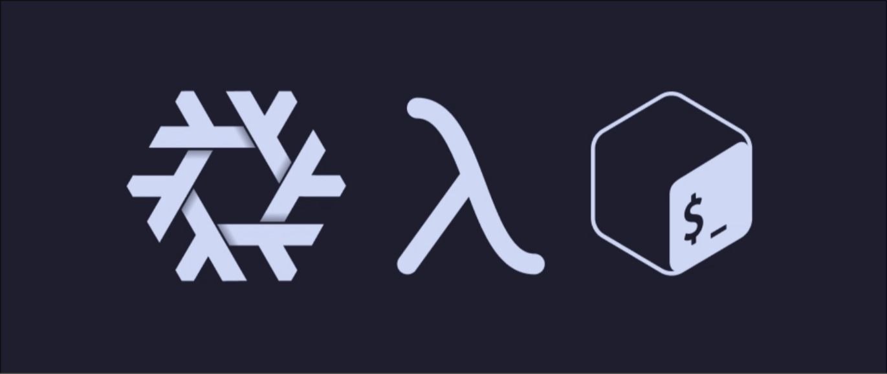

Chapter 1
Getting Started with the Nix Language
Welcome to the world of Nix, a powerful tool for reproducible and declarative software management. In this chapter, we’ll explore the basics of the Nix programming language, a pure, functional, and declarative language that underpins Nix’s package manager and operating system. By the end, you’ll understand Nix’s core concepts, syntax, and how to write simple expressions and derivations.
❗ If you're new to Nix, think of it as a recipe book for software: you describe what you want (declarative), and Nix ensures it’s built the same way every time (reproducible).
Why Learn Nix?
Nix is often described as “JSON with functions.” It’s a declarative language where you define outcomes, not step-by-step instructions. Instead of writing sequential code, you create expressions that describe data structures, functions, and dependencies. These expressions are evaluated lazily, meaning Nix computes values only when needed, making it efficient for managing large systems.
Let’s dive into the key characteristics of Nix:
| Concept | Description |
|---|---|
| Pure | Functions don't cause side effects. |
| Functional | Functions can be passed as arguments and returned as results. |
| Lazy | Not evaluated until needed to complete a computation. |
| Declarative | Describing a system outcome. |
| Reproducible | Operations that are performed twice return same results |
❗ Important: In Nix, everything is an expression, there are no statements.
❗ Important: Values in Nix are immutable.
Syntax Basics

-
Dashes are allowed as identifiers:
nix-repl> a-b
error: undefined variable `a-b' at (string):1:1
nix-repl> a - b
error: undefined variable `a' at (string):1:1
❗ Tip
a-bis parsed as an identifier, not as subtraction.
- Strings: Strings are enclosed in double quotes (
") or two single quotes ('').
nix-repl> "stringDaddy"
"stringDaddy"
nix-repl> ''stringMoma''
"stringMoma"
String Interpolation: Is a language feature where a string, path, or
attribute name can contain expressions enclosed in ${ }. This construct
is called interpolated string, and the expression inside is an
interpolated expression.string interpolation.
Rather than writing:
let path = "/usr/local"; in "--prefix=${path}"
-
This evaluates to
"--prefix=/usr/local". Interpolated expressions must evaluate to a string, path, or an attribute set with an outPath or__toStringattribute. -
Attribute sets are all over Nix code, they are name-value pairs wrapped in curly braces, where the names must be unique:
{
string = "hello";
int = 8;
}
- Attribute names usually don't need quotes.
You can access attributes using dot notation:
let person = { name = "Alice"; age = 30; }; in person.name
"Alice"
You will sometimes see attribute sets with rec prepended. This allows access to attributes within the set:
rec {
one = 1;
two = one + 1;
three = two + 1;
}
- Without
rec, this command would fail because we are trying to use an attribute that is defined within this attribute set. You would get an undefined variable 'one' error.
Inheriting Attributes
let x = 123; in
{
inherit x;
y = 456;
}
is equivalent to
let x = 123; in
{
x = x;
y = 456;
}
Both evaluate to:
{ x = 123; y = 456; }
❗: This works because
xis added to the lexical scope by theletconstruct.
Control Flow with Expressions
If expressions:
nix-repl> a = 6
nix-repl> b = 10
nix-repl> if a > b then "yes" else "no"
"no"
Let expressions:
let a = "foo"; b = "fighter"; in a + b
"foofighter"
# flake.nix
outputs = my-inputs @ {
self,
nixpkgs,
treefmt-nix,
...
}: let
system = "x86_64-linux";
host = "magic";
in {
## Outputs go here
}
# nvf.nix
{ pkgs, inputs, config, lib, ... }: let
cfg = config.custom.nvfModule;
in {
options.custom.nvfModule.enable = lib.mkOption {
type = lib.types.bool;
default = false;
description = "Enable the nvf nvim configuration";
};
}
With expressions:
nix-repl> longName = { a = 3; b = 4; }
nix-repl> longName.a + longName.b
7
nix-repl> with longName; a + b
7
# utils.nix
{ pkgs, ... }: {
environment.systemPackages = with pkgs; [
rustup
evcxr
nix-prefetch-git
];
}
Laziness:
- Nix evaluates expressions only when needed. This is a great feature when working with packages.
nix-repl> let a = builtins.div 4 0; b = 6; in b
6
- Since
aisn't needed, there's no error about division by zero, because the expression is not in need to be evaluated. That's why we can have all the packages defined on demand, yet have acces to specific packages very quickly. Some of these examples came from the Nix pill series.
Functions:
The code below calls a function called my_function with the parameters 2 and
3, and assigns its output to the my_value field:
{
my_value = my_function 2 3;
}
Functions are defined using this syntax, where x and y are attributes passed
into the function:
{
my_function = x: y: x + y;
}
- The body of the function automatically returns the result of the function. Functions are called by spaces between it and its parameters. No commas are needed to separate parameters.
let negate = x: !x;
concat = x: y: x + y;
in if negate true then concat "foo" "bar" else ""
negate = x: !x;
This defines a function named negate that takes one argument x and returns
its logical negation (using !)
-
concat = x: y: x + ydefines a function that takes two arguments,xandy, and returns their string concatenation. Notice how Nix handles multi-argument functions through currying -- it's a function that returns another function. This was a little confusing to me, I'm thinking how does it return a function ifconcat 1 2returns3...-
x: ...: This part says thatconcattakes one argument, which we've namedx. -
y: x + y: The result of the first part isn't the final value. Instead, it's another function. This inner function takes one argument, which we've namedy, and then it addsxandy. -
When you do
concat 1you're applying theconcatfunction to the argument1. This returns the inner function, wherexis now fixed as1. The inner function is essentially waiting for itsyargument to be provided. -
It's when you apply the second argument,
2, to this resulting function(concat 1) 2that the addition1 + 2finally happens, giving us3.
-
It's like a chain of function applications:
-
concattakesxand returns a new function. -
This new function takes
yand returns the result ofx + y.
Derivations
-
In Nix, the process of managing software starts with package definitions. These are files written in the Nix language that describe how a particular piece of software should be built. These package definitions, when processed by Nix, are translated into derivations.
-
At its core, a derivation in Nix is a blueprint or a recipe that describes how to build a specific software package or any other kind of file or directory. It's a declarative specification of:
-
Inputs: What existing files or other derivations are needed as dependencies.
-
Build Steps: The commands that need to be executed to produce the desired output.
-
Environment: The specific environment (e.g., build tools, environment variables) required for the build process.
-
Outputs: The resulting files or directories that the derivation produces.
Think of a package definition as the initial instructions, and the derivation as the detailed, low-level plan that Nix uses to actually perform the build."
Again, a derivation is like a blueprint that describes how to build a specific software package or any other kind of file or directory.
Key Characteristics of Derivations:
-
Declarative: You describe the desired outcome and the inputs, not the exact sequence of imperative steps. Nix figures out the necessary steps based on the builder and args.
-
Reproducible: Given the same inputs and build instructions, a derivation will always produce the same output. This is a cornerstone of Nix's reproducibility.
-
Tracked by Nix: Nix keeps track of all derivations and their outputs in the Nix store. This allows for efficient management of dependencies and ensures that different packages don't interfere with each other.
-
Content-Addressed: The output of a derivation is stored in the Nix store under a unique path that is derived from the hash of all its inputs and build instructions. This means that if anything changes in the derivation, the output will have a different path.
Hello World Derivation Example:
{ pkgs ? import <nixpkgs> {} }:
pkgs.stdenv.mkDerivation {
name = "hello-world";
src = null; # No source code needed
buildPhase = ''
echo "Hello, World!" > $out
'';
installPhase = ''
mkdir -p $out/bin
cp $out $out/bin/hello
chmod +x $out/bin/hello
'';
meta = {
description = "A simple Hello World program built with Nix";
homepage = null;
license = lib.licenses.unfree; # For simplicity
maintainers = [];
};
}
-
{ pkgs ? import <nixpkgs> {} }: This is a function that takes an optional argumentpkgs. We need Nixpkgs to access standard build environments likestdenv. -
pkgs.stdenv.mkDerivation { ... }:This calls the mkDerivation function from the standard environment (stdenv). mkDerivation is the most common way to define software packages in Nix. -
name = "hello-world";: Human-readable name of the derivation -
src = null: No external source code for this simple example -
The rest are the build phases and package metadata.
To use the above derivation, save it as a .nix file (e.g. hello.nix). Then
build the derivation using:
nix build ./hello.nix
-
Nix will execute the
buildPhaseandinstallPhase -
After a successful build, the output will be in the Nix store. You can find the exact path by looking at the output of the nix build command (it will be something like
/nix/store/your-hash-hello-world).
Run the "installed" program:
./result/bin/hello
- This will execute the
hellofile from the Nix store and print "Hello, World!".
Here's a simple Nix derivation that creates a file named hello in the Nix store containing the text "Hello, World!":
Evaluating Nix Files
Use nix-instantiate --eval to evaluate the expression in a Nix file:
echo 1 + 2 > file.nix
nix-instantiate --eval file.nix
3
Note:
--evalis required to evaluate the file and do nothing else. If--evalis omitted,nix-instantiateexpects the expression in the given file to evaluate to a derivation.
If you don't specify an argument, nix-instantiate --eval will try to read from
default.nix in the current directory.
Conclusion
As we have now seen, this chapter touched on the basic syntax of function definition and application, including concepts like currying. However, the power and flexibility of Nix functions extend far beyond what we've covered so far.
In the next chapter, Understanding Nix Functions we will peel back the layers and explore the intricacies of function arguments, advanced patterns, scope, and how functions play a crucial role in building more sophisticated Nix expressions and derivations.
Here are some resources that I found helpful when learning the Nix Language.